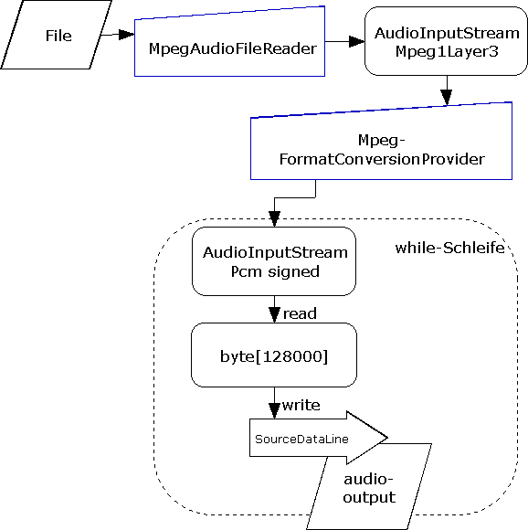

Java Sound. Eine Einführung toc prev next
1.3 Advanced Examples1.3.1 AudioPlayer - Wiedergabe eines mp3sWiedergabe einer mp3-Datei. JavaSound selbst kann keine mp3s abspielen. Allerdings hat die Gruppe Tritonus das service provider interface javax.sound.sampled.spi implementiert. Dieser Service setzt voraus, das der lame mp3-en/decoder auf dem System installiert ist. Konzept: Zwei AudioInputStreams werden verbunden, wobei der erste eine Konvertierung von mp3 nach Pcm signed leistet.  Bemerkung: Dieser Aufbau eignet sich auch für die unterstützten Formate (wav, aif, ...), denn das AudioSystem wählt abhängig vom Dateinformat der Datei dynamisch den nötigen AudioFileReader und FormatConversionProvider. 1.3.1 AudioFileTypeConverter - TypkonvertierungDurch Angabe des Dateityps in der write Methode wird die Konvertierung festgelegt. |
Java Sound. Eine Einführung toc prev next [ back to a p a g e 4 u ]